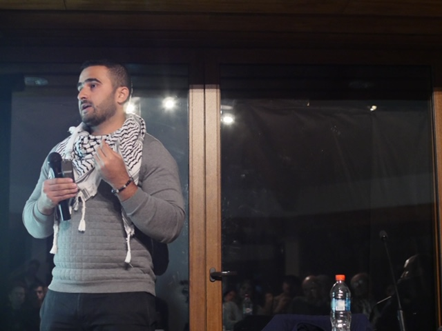

About Me
Mohammed Arafat is a 27 year old Palestinian writer and poet from Gaza. He has been a witness to three violent wars on the Gaza strip, where he lost friends, relatives and neighbors. Directly after the 2014 war on Gaza, he published Still Living There, a novel which talks about a Palestinian farmer forced to leave Haifa to Gaza during the 1948 Nakbah, and the resultant suffering of Palestinian refugees.
Mohammed lived in Chile for almost a year, during which he started a project to reconnect Palestinians of Chile, which has the biggest Palestinian community outside Palestine, to their native culture through poetry.
Finishing his internship at the office of congressman Donald Payne at the Capitol Hill in the US, as a part of a program called New Story Leadership, Mohammed writes for some new papers, including Haaretz, We Are Not Numbers, The New Arab to document his life back home and the Gazan humanitarian crises.
Through his work, Mohammed aims to make the unheard voices of the Palestinians of Gaza heard.
My Blog